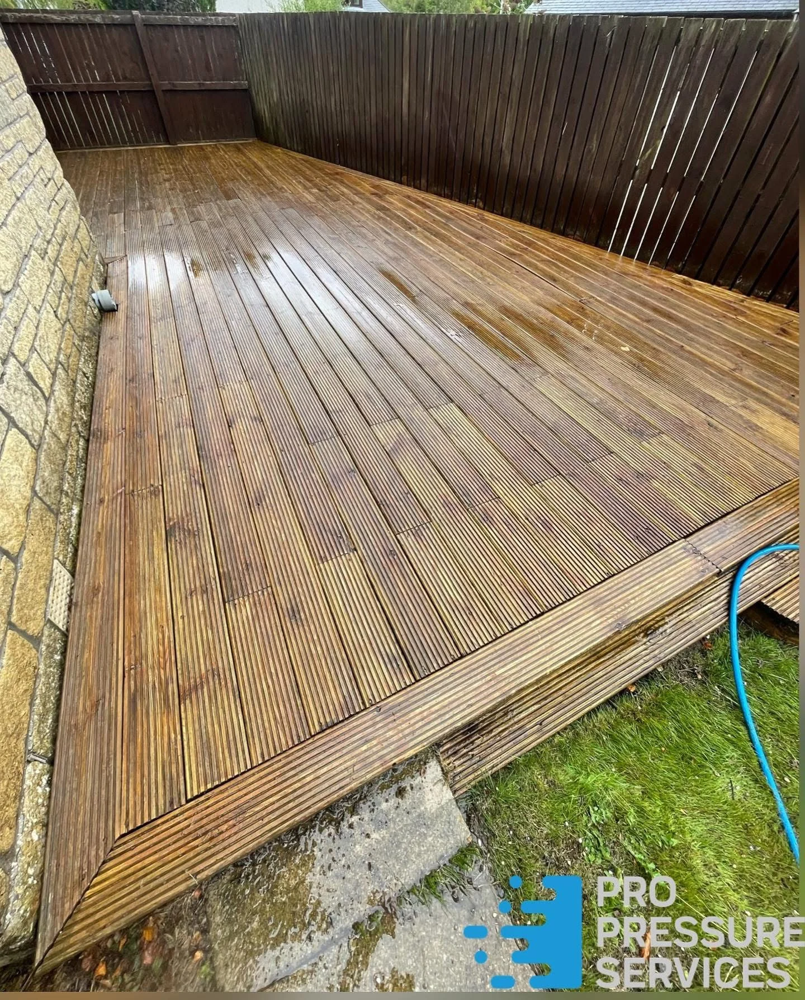
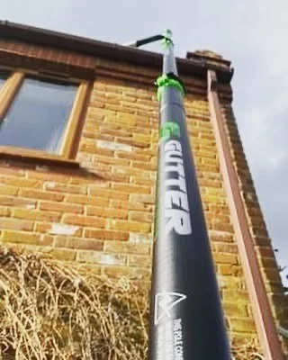

DrivewaysBlock paving & entrances
PatiosStone, slabs & paved areas
DeckingOutdoor timber & walkways
GuttersClearance & vacuum access
Paths & stepsRoutes around your home
OUTDOOR SPACES, REFRESHED
Colour, uncovered.
Dirt and surface growth can hide the colour and pattern in your paving. Pro Pressure Services specialises in jet washing, with project results spanning driveways, stone patios, paths and decking.
Take a closer look at the transformations, then send photos of your own space to discuss the work.
Tell us about your project →

PAVING & STEPS
A brighter welcome.
Cleaning reveals the warm paving beside these outdoor steps. The same corner is shown before and after, with the full photographs available to enlarge.
Paths & steps →BEFORE & AFTER
See it side by side.
Matching views, grouped by project. Tap any photo to view the complete image.
Entrance refresh
The same curved block-paved entrance before and after cleaning.
Driveway detail
The block pattern and warmer colours become clear across this driveway.
A lighter patio
Surface growth removed from the paved seating area beside the garden.
MORE RESULTS
From stone to timber.
More paving, decking and work in progress. Explore the different surfaces and the finish revealed by cleaning.

BEYOND THE PAVING
Clear the way.
Gutter clearance forms part of the work shown in the portfolio. The channel photographs show standing water and debris, followed by a cleared gutter.
01
Share the details
Send your postcode, photographs and a description of the areas that need attention.
02
Discuss the surface
Material, condition and access help establish the work needed.
03
Explore gutter cleaning →Plan the work
Contact Pro Pressure Services to discuss a quote and availability.
GUTTER CLEARANCE
A clear channel.
FACEBOOK RECOMMENDATIONS
100% recommendBased on 104 reviews on Facebook.
REQUEST A QUOTE
What needs a clean?
Choose a service and tell us about the job. This form opens WhatsApp with your details ready to send. You can add photos in the chat.
Include your postcode so coverage can be confirmed, along with the type of surface and an approximate size.
Call 07515 827869
info@propressureservices.co.uk
Your details are only shared when you send the message. Privacy information.
GOOD TO KNOW
A few answers.
What services can I enquire about?
Driveway, patio, decking, path and gutter cleaning. The project photographs show examples of each.
How do I request a quote?
Call, email or use the WhatsApp form. Send photographs, your postcode, approximate dimensions and a short description of the work.
Do you cover my area?
Send your postcode with your enquiry so Pro Pressure Services can confirm coverage and availability.
Can you clean block paving?
The driveway and entrance projects show block paving before and after cleaning. Include the condition and area of your paving when you enquire.
What about decking?
Decking cleaning is shown in the portfolio. Share photos of the timber or other decking material and any damaged areas so a suitable approach can be discussed.
Can you clear gutters?
Yes, the portfolio includes gutter clearance and gutter vacuum equipment. Share details of the building height and access when requesting a quote.
Will pressure washing suit every surface?
The material, age and condition of the surface matter. Share any known damage and close-up photos so the work can be discussed before it is agreed.
PRO PRESSURE SERVICES
Ready for a refresh?
Tell us about your surfaces and request a quote.
info@propressureservices.co.uk